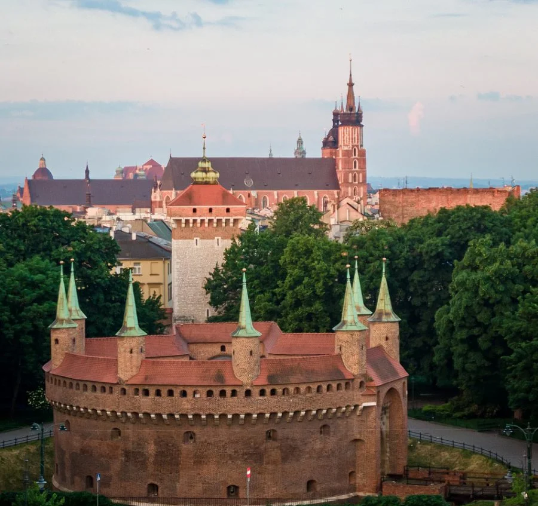

Barbakan w Krakowie to jedna z najlepiej zachowanych budowli obronnych w Polsce. Został wzniesiony na przełomie XV i XVI wieku, jako część systemu obronnego miasta. Jego głównym celem była ochrona przed atakami wrogów. Barbakan stanowił część murów miejskich, a jego strategiczne położenie miało na celu obronę głównej bramy prowadzącej do miasta.
Budowla jest wyjątkowa ze względu na swoje okrągłe kształty oraz masywne mury, które do dziś robią wrażenie na turystach. Barbakan był wyposażony w liczne strzelnice, a także w system fosy, który dodatkowo utrudniał dostęp do fortecy. W przeszłości pełnił funkcję wartowni, a także miejsca, z którego strażnicy mogli obserwować wschodnią część Krakowa.
Obecnie Barbakan jest jednym z najważniejszych punktów turystycznych w Krakowie, który odwiedza rocznie tysiące turystów z całego świata. W okolicach Barbakan znajduje się również Brama Floriańska, a cała okolica stanowi część średniowiecznego układu urbanistycznego miasta.
Jako część Systemu Obronnego Krakowa, Barbakan wznosił się na wysokość około 10 metrów i miał średnicę około 24 metrów. Zbudowano go z cegły, a na jego szczycie umieszczono kilka baszt obronnych. Z racji swojego wyglądu oraz architektury, Barbakan jest jednym z najbardziej rozpoznawalnych elementów historycznych Krakowa.
Wnętrze Barbakanu zostało udostępnione do zwiedzania, a obecnie znajduje się tam muzeum, które przedstawia historię tej niezwykłej budowli oraz czasów, w których powstała. Dzięki wystawom oraz edukacyjnym zajęciom, odwiedzający mogą dowiedzieć się, jak wyglądało życie w średniowieczu, jakimi metodami broniono miasto i jakie wydarzenia miały miejsce w tym miejscu.
Barbakan stanowi ważny element turystyczny i jest symbolem dawnych czasów. W okolicach tej budowli można poczuć atmosferę średniowiecznego Krakowa, spacerując po Starym Mieście, które jest pełne zabytków i ciekawych miejsc do odkrycia.Warto dodać, że Barbakan był jednym z kilku tego typu obiektów w Polsce, a jego funkcja obronna sprawiła, że miasto stało się bardziej zabezpieczone przed najazdami. Obecnie jest to miejsce, które łączy historię z turystyką, stanowiąc świetną atrakcję dla wszystkich odwiedzających Kraków.
Barbakan to nie tylko zabytek, ale także część tożsamości miasta. Jego unikalny wygląd oraz historia związana z obroną miasta sprawiają, że jest to jedno z najważniejszych miejsc w Krakowie, które warto zobaczyć.